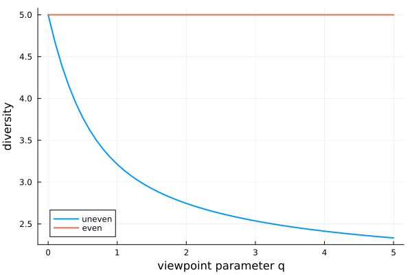

The framework
This package is an executable form of a specific piece of mathematics. This page explains what that mathematics measures, what each measure means, and where it came from - everything the rest of the documentation assumes you already know.
Origins
Three ideas, each generalising the one before it.
Effective numbers (Hill, 1973). A diversity should be reported as a number of types: a community of S equally abundant, completely distinct types has diversity exactly S, whatever the order of the measure. That single requirement is what makes diversities comparable, and it is the property everything here is built to preserve. Hill did not invent the underlying mathematics - he took a family of entropy measures from information theory and reported them in units an ecologist can use, rather than in bits. That is why exponentiating turns up so often here: a Hill number is the exponential of an entropy. Where that family came from is at the end of this section.
Similarity (Leinster and Cobbold, 2012). Types are rarely wholly distinct. Two species in the same genus, two age classes a year apart, two bacterial isolates differing by one resistance - treating these as unrelated throws away most of what you know. Leinster and Cobbold generalised Hill's mathematics to make diversity sensitive to a similarity matrix Z, while keeping the effective-number reading: the answer becomes the effective number of distinct types.
Partitioning (Reeve et al.). A community is usually divided - into sites, time points, host populations. Existing approaches aggregated across the whole population, giving only "within", "between" and "total" diversity. This framework generalises Leinster and Cobbold's mathematics in turn, measuring each subcommunity individually and in the context of the whole, so subcommunities can be compared directly with one another. That is what this package implements.
Where the mathematics came from. Shannon (1948) defined the entropy of a probability distribution, to measure information in a communication channel. Rényi (1961) generalised it, showing that Shannon's entropy is one member of a whole family indexed by a parameter - the q that runs through everything above.
Reeve R, Leinster T, Cobbold CA, Thompson J, Brummitt N, Mitchell SN, Matthews L. How to partition diversity. arXiv:1404.6520. CITATION.bib in the repository has the BibTeX entry. The framework is independently implemented in R as rdiversity, against which this package is cross-validated.
What this package does differently
If you are arriving from a classical diversity package - R's vegan especially - three things here will not be what you expect. None of them is an accident, and knowing them up front removes most of the surprise.
Beta diversity is not pairwise. vegdist and betadiver give you a dissimilarity between two sites, and a matrix of them for a whole dataset. Here, every beta measure compares one subcommunity with the metacommunity it belongs to, giving one value per subcommunity rather than a matrix. That is what makes subcommunities directly comparable with one another - and it is why jaccard, which genuinely is a pairwise index, only accepts exactly two subcommunities.
Abundances are relative to the whole metacommunity. A classical package takes a sites × species table and normalises each row. Here the whole matrix sums to one, so the column sums are the subcommunity weights, and a subcommunity's size is part of the answer rather than something divided out. Give it counts and it will normalise them for you; give it proportions that sum to one per column and you will get a warning telling you they did not sum to one overall.
Note: Ā * B̄ = G does not hold here, and that is the central design decision. vegan offers adipart and multipart for exactly that partitioning, and a great deal of the literature assumes it. In this framework the relationship holds when q = 1, and in degenerate cases, but not in general.
What was bought by giving it up:
| property | what it means |
|---|---|
| invariance under shattering | splitting a well-mixed subcommunity in two does not change the normalised metacommunity measures - an arbitrary boundary cannot manufacture diversity |
| conditional independence | a subcommunity's measures depend only on itself and on the metacommunity as a whole, never on how the rest is divided up |
| comparability | consequently, two subcommunities can be compared directly, and ranked |
Those three are what let you ask "which of my sites is the most distinctive?" and get an answer that does not change when someone redraws a boundary elsewhere. The conflict is with the first of them: solving the partition for beta makes it gamma divided by alpha, which ties its behaviour under shattering to alpha's. Gamma cannot depend on how the metacommunity was divided, so an alpha that is not invariant forces a beta that is not invariant either, and the size-weighted average alpha the partition is usually built on is exactly that. Reeve et al. prove this for Jost's measures, by splitting one well-mixed subcommunity of a two-subcommunity metacommunity: their alpha and beta both move for every q except 1, where they coincide with the measures used here. See Properties below for what this framework guarantees instead.
What you supply
A calculation needs three things, and they map directly onto the three arguments of Metacommunity:
- types - what the individuals are, and how similar they are to one another. That similarity is the matrix
Z, whereZᵢⱼis the similarity between typesiandj, usually between 0 and 1. Types wholly distinct from one another meansZ = I, which is whatUniqueTypesprovides; - a partition - how the metacommunity divides into subcommunities (
Subcommunities, orOnecommunityfor an undivided one); - abundances - a matrix
P, types down and subcommunities across.
Note:Abundances are relative to the whole metacommunity and sum to one across all of it, not one per column. The column sums are then the subcommunity weights w, and the row sums the metacommunity abundance p. Counts are normalised for you; floating-point abundances that miss are corrected with a warning.
Ordinariness
Everything is built from one derived quantity. The ordinariness of a type is (Zp)ᵢ - the expected similarity between an individual of that type and an individual drawn at random from the metacommunity. A type is ordinary when there is a lot of stuff like it about; its reciprocal is that type's uniqueness.
julia> using Diversityjulia> using Diversity.ShortNamesjulia> pop = [0.2 0.1; 0.1 0.3; 0.2 0.1]3×2 Matrix{Float64}: 0.2 0.1 0.1 0.3 0.2 0.1julia> getordinariness!(Metacommunity(pop))3×2 Matrix{Float64}: 0.2 0.1 0.1 0.3 0.2 0.1
With no similarity, ordinariness is just abundance - an individual is only like others of its own type. Introduce similarity and each type inherits some of its neighbours' abundance:
julia> Z = [1.0 0.5 0.0; 0.5 1.0 0.5; 0.0 0.5 1.0]3×3 Matrix{Float64}: 1.0 0.5 0.0 0.5 1.0 0.5 0.0 0.5 1.0julia> getordinariness!(Metacommunity(pop, Z))3×2 Matrix{Float64}: 0.25 0.25 0.3 0.4 0.25 0.25
Every measure in the package is a ratio of ordinarinesses, averaged with a power mean. That is the whole design.
The viewpoint parameter
Every measure takes an order q, the viewpoint parameter, running from 0 to ∞. It sets how much weight rare types get:
q | reads as | recovers |
|---|---|---|
0 | every type counts alike, however rare | richness |
1 | types counted in proportion to their abundance | Shannon entropy |
2 | commoner types weighted more heavily | Simpson's index |
∞ | only the commonest type matters | Berger-Parker |
julia> uneven = [0.5, 0.3, 0.15, 0.04, 0.01]5-element Vector{Float64}: 0.5 0.3 0.15 0.04 0.01julia> meta_gamma(Metacommunity(uneven), [0, 1, 2, Inf])[!, :diversity]4-element Vector{Float64}: 5.0 3.212791431763062 2.7457440966501925 2.0
Five types are present, so at q = 0 the diversity is 5; as q rises the two rare types stop counting and it falls towards the effective number of common types. q = 1 is the usual default when there is no reason to prefer another: it corresponds to Shannon entropy, the most studied case.
Diversities are decreasing in q - for α, ᾱ, ρ, ρ̄ and γ and their metacommunity counterparts. Note: β and β̄ run the other way, increasing in q, being reciprocals of ρ and ρ̄; and the metacommunity averages B and B̄ are not monotone in either direction.
What "viewpoint" means
The name is the useful part. q is not a property of the community; it is a property of the person asking. A conservationist counting how many species are present at all takes q = 0, giving a rare species and a dominant one equal say. Someone asking what an ecosystem is functionally made of takes a high q, where a species at 0.1% abundance barely registers. Neither is more correct - they are different viewpoints on the same data, and the framework makes you say which you are taking.
That is why a single number is usually the wrong output. Report a diversity profile instead:
using Diversity, Plots
uneven = [0.5, 0.3, 0.15, 0.04, 0.01]
even = fill(0.2, 5)
qs = 0:0.1:5
plot(qs, meta_gamma(Metacommunity(uneven), qs)[!, :diversity],
label = "uneven", xlabel = "viewpoint parameter q",
ylabel = "diversity", linewidth = 2)
plot!(qs, meta_gamma(Metacommunity(even), qs)[!, :diversity],
label = "even", linewidth = 2)
Both communities contain five types, so both start at 5. The even one stays there - with nothing rare to discount, every viewpoint agrees. The uneven one falls away as q rises, and how fast it falls is the evenness. A profile therefore says more than richness and evenness reported separately, because it shows them as one curve.
If you know vegan, you have met this already: renyi(x, scales, hill = TRUE) computes exactly this, and its scales argument is q. renyiaccum plots the profile. The difference here is that you can take a profile of any measure, not just gamma - a profile of norm_sub_rho shows how a subcommunity's representativeness depends on whether you care about its rare types.
When in doubt use q = 1. It is the only order weighting each type exactly in proportion to its abundance, it corresponds to Shannon entropy, and it is where the multiplicative relationships hold. Every example in this documentation uses it unless there is a reason not to.
The measures
Seven measures, each meaningful at two scales. The two readings genuinely differ - a subcommunity's gamma diversity is its contribution to the whole, while the metacommunity's gamma is the diversity of the whole - so the table gives both:
| package | symbol | as a subcommunity measure | as a metacommunity measure |
|---|---|---|---|
RawAlpha | α / A | estimate of naive-community metacommunity diversity | naive-community metacommunity diversity |
NormalisedAlpha | ᾱ / Ā | diversity of the subcommunity in isolation | average diversity of the subcommunities |
RawRho | ρ / R | redundancy of the subcommunity | average redundancy of the subcommunities |
RawBeta | β / B | distinctiveness of the subcommunity | average distinctiveness of the subcommunities |
NormalisedRho | ρ̄ / R̄ | representativeness of the subcommunity | average representativeness of the subcommunities |
NormalisedBeta | β̄ / B̄ | estimate of effective number of distinct subcommunities | effective number of distinct subcommunities |
Gamma | γ / G | contribution per individual toward metacommunity diversity | metacommunity similarity-sensitive diversity |
Note: a symbol's alphabet and case carry its level. Lowercase Greek is a subcommunity measure, capital Roman is the corresponding metacommunity one, and lowercase Roman is the individual value the other two are built from - a subcommunity measure is a power mean of individual values, and a metacommunity measure a mean of subcommunity ones. So ā is one individual's normalised alpha, ᾱ a subcommunity's, and Ā the metacommunity's. That distinction is carried entirely by the alphabet, since ā and ᾱ are otherwise near-identical to the eye, so read them carefully. The exported short names are the one exception: they name the measure type rather than a level, so they are Greek whichever level you go on to ask for, and gamma is exported as Γ because γ cannot be.
Two axes run through that table:
- raw versus normalised is a factor of the subcommunity's size
w, and nothing else. A raw measure is per individual; a normalised one treats the subcommunity as a community in its own right. - ρ and β are reciprocals. Redundancy asks how much of a subcommunity's diversity would survive its loss; distinctiveness asks how much is unique to it. They are the same question asked from opposite ends, which is why the package provides both.
subdiv and metadiv select the scale, and the wrapper functions name the pair directly - norm_sub_rho is representativeness per subcommunity, meta_gamma is metacommunity diversity.
What the measures show you
Each of the following is a published result of the framework, reproduced here by running it.
Diversities are effective numbers
Five equally abundant, wholly distinct types have diversity exactly five - at every q. This is the defining property, and everything else is built to preserve it.
julia> meta_gamma(Metacommunity(fill(1 / 5, 5)), [0, 1, 2, Inf])[!, :diversity]4-element Vector{Float64}: 5.0 5.000000000000001 4.999999999999999 5.0
Representativeness is a proportion
Take a metacommunity where all types are equally abundant, and each subcommunity holds an equal share of them. A subcommunity holding a fraction f of the types has representativeness exactly f:
julia> twothirds = [1 1 0; 1 1 0; 0 1 1; 0 1 1; 1 0 1; 1 0 1] ./ 126×3 Matrix{Float64}: 0.0833333 0.0833333 0.0 0.0833333 0.0833333 0.0 0.0 0.0833333 0.0833333 0.0 0.0833333 0.0833333 0.0833333 0.0 0.0833333 0.0833333 0.0 0.0833333julia> norm_sub_rho(Metacommunity(twothirds), 1)[!, :diversity]3-element Vector{Float64}: 0.6666666666666666 0.6666666666666666 0.6666666666666666
Each type sits in two of the three subcommunities, so each subcommunity holds four of the six types - two thirds of them - and represents two thirds of the metacommunity. Note: It is still only a third of the individuals, and the two numbers are deliberately different: it is the share of the types that the answer follows, not the share of the population.
Size is irrelevant in the other direction too. Give every subcommunity every type, in the metacommunity's own proportions, and representativeness is 1 however uneven their sizes are:
julia> allshared = [1 2 3; 1 2 3; 1 2 3; 1 2 3; 1 2 3; 1 2 3] ./ 366×3 Matrix{Float64}: 0.0277778 0.0555556 0.0833333 0.0277778 0.0555556 0.0833333 0.0277778 0.0555556 0.0833333 0.0277778 0.0555556 0.0833333 0.0277778 0.0555556 0.0833333 0.0277778 0.0555556 0.0833333julia> getweight(Metacommunity(allshared))3-element Vector{Float64}: 0.16666666666666669 0.33333333333333337 0.49999999999999994julia> norm_sub_rho(Metacommunity(allshared), 1)[!, :diversity]3-element Vector{Float64}: 1.0000000000000002 1.0000000000000002 0.9999999999999998
The last subcommunity has three times the individuals of the first and both are perfectly representative. A subcommunity is representative when it looks like the metacommunity, not when it is a large part of it.
That insensitivity is what "normalised" means. Representativeness is the normalised measure of the pair: the subcommunity's weight w is divided out, so it is treated as a community in its own right and its size cannot reach the answer. The raw measure beside it keeps that factor, and therefore behaves quite differently.
Redundancy is a count, and it does see size
Redundancy ρ is the raw measure that representativeness normalises, and they differ by exactly the subcommunity's weight: ρ̄ = w .* ρ at the subcommunity level. Where representativeness asks what proportion of the metacommunity a subcommunity stands for, redundancy asks how many times over the things in it are represented elsewhere - a count, per individual, and so it does see size. The same two examples make the difference concrete.
julia> raw_sub_rho(Metacommunity(twothirds), 1)[!, :diversity]3-element Vector{Float64}: 2.0 2.0 2.0
Every type sits in two of the three subcommunities, so lose any one and everything in it still survives elsewhere: redundancy exactly 2. Representativeness was 2/3, and 2 * 1/3 = 2/3.
julia> raw_sub_rho(Metacommunity(allshared), 1)[!, :diversity]3-element Vector{Float64}: 5.999999999999998 3.0000000000000004 2.0
This is the case to look at. All three subcommunities were equally and perfectly representative; their redundancies are 6, 3 and 2 - the reciprocals of their weights. The smallest subcommunity is the most redundant, because the other five sixths of the metacommunity duplicate everything in it, while the largest holds half of everything itself and so is duplicated only twice over. Nothing about the composition changed between the two measures; dividing by w is the whole of the difference.
Note: Which one you want is a real choice rather than a default. Ask "how much of the metacommunity does this site speak for?" and you want ρ̄, where a small site is not penalised for being small. Ask "if I lose this site, how much of what was in it survives?" and you want ρ, where being small is precisely what makes it expendable.
The effective number of distinct subcommunities is normalised in the same way
The beta measures are the reciprocals of the rho ones, and they inherit the split exactly. NormalisedBeta β̄ is the normalised one - the same w divided out - and asks how many distinct subcommunities like this one the metacommunity would amount to.
julia> norm_sub_beta(Metacommunity(twothirds), 1)[!, :diversity]3-element Vector{Float64}: 1.5 1.5 1.5julia> norm_meta_beta(Metacommunity(twothirds), 1)[1, :diversity]1.5
All three subcommunities in the matrix look much like this one, but every type is shared between two of the three, so neither of the others is distinct from it - and they are worth only 1.5 distinct subcommunities between them. Each subcommunity on its own arrives at that same number, which is why the subcommunity-level measure is called an estimate of the effective number of distinct subcommunities.
julia> norm_sub_beta(Metacommunity(allshared), 1)[!, :diversity]3-element Vector{Float64}: 0.9999999999999999 0.9999999999999999 1.0000000000000002julia> norm_meta_beta(Metacommunity(allshared), 1)[1, :diversity]1.0
Perfectly mixed, the answer is 1: there is effectively one distinct subcommunity, however many columns the matrix has and however unequal they are. Size cannot reach this measure either - which is exactly what lets it survive shattering, below.
Distinctiveness is raw, and sees size the same way
RawBeta β is redundancy's reciprocal and the raw member of the pair, keeping the factor of w. It asks what share of its own types a subcommunity holds - how much of it is its own.
julia> raw_sub_beta(Metacommunity(twothirds), 1)[!, :diversity]3-element Vector{Float64}: 0.5 0.5 0.5julia> raw_sub_beta(Metacommunity(allshared), 1)[!, :diversity]3-element Vector{Float64}: 0.1666666666666667 0.3333333333333333 0.49999999999999994
Each type is split between two subcommunities, so each holds half of it: 0.5, the reciprocal of the redundancy of 2. And in the mixed case distinctiveness is w exactly - a subcommunity that is half the metacommunity holds half of each of its types, and one that is a sixth holds a sixth.
Note: Beta runs the opposite way from the other three measures, being a reciprocal, so read it with care: 1 is the maximum distinctiveness, reached only when nothing outside the subcommunity resembles anything within it, and small values mean heavily shared. Note: That ceiling holds when types are wholly distinct; a general similarity matrix can break it, as the section on similarity below shows.
Gamma is per individual, so it does not track alpha
This is the distinction that makes subcommunity gamma a new measure rather than a rescaling. Here two subcommunities draw on types that are equally abundant in the metacommunity, but the first has twice as many of them:
julia> sizes = [1 0; 1 0; 1 0; 1 0; 0 1; 0 1] ./ 66×2 Matrix{Float64}: 0.166667 0.0 0.166667 0.0 0.166667 0.0 0.166667 0.0 0.0 0.166667 0.0 0.166667julia> norm_sub_alpha(Metacommunity(sizes), 1)[!, :diversity]2-element Vector{Float64}: 4.0 2.0julia> sub_gamma(Metacommunity(sizes), 1)[!, :diversity]2-element Vector{Float64}: 6.0 6.0
The first subcommunity is twice as diverse in isolation - but each of its individuals contributes exactly as much to the metacommunity as each of the second's, because all six types are equally abundant overall. Rarity, not richness, is what changes the contribution:
julia> rarity = [1 0 0; 1 0 0; 0 1 2; 0 1 2] ./ 84×3 Matrix{Float64}: 0.125 0.0 0.0 0.125 0.0 0.0 0.0 0.125 0.25 0.0 0.125 0.25julia> norm_sub_alpha(Metacommunity(rarity), 1)[!, :diversity][1:2]2-element Vector{Float64}: 2.0 2.0julia> sub_gamma(Metacommunity(rarity), 1)[!, :diversity][1:2]2-element Vector{Float64}: 7.999999999999998 2.6666666666666665
Now the first two subcommunities are the same size and equally diverse in isolation, but the first one's types are three times rarer in the metacommunity - and its contribution is three times greater.
Hidden diversity
The case the framework was built to expose. A subcommunity holding a single very rare type is utterly dull in isolation, yet each of its individuals contributes enormously to the diversity of the whole:
julia> rare = 1e-91.0e-9julia> hidden = zeros(12, 3);julia> hidden[1, 1] = rare; # one very rare typejulia> hidden[2:11, 2] .= rare; # ten equally rare typesjulia> hidden[12, 3] = 1 - 11rare; # the common backgroundjulia> hid = Metacommunity(hidden);julia> norm_sub_alpha(hid, 1)[!, :diversity]3-element Vector{Float64}: 1.0 10.000000000000002 1.0julia> sub_gamma(hid, 1)[!, :diversity]3-element Vector{Float64}: 9.999999999999993e8 9.999999999999921e8 1.0000000110000002julia> norm_sub_beta(hid, 1)[!, :diversity]3-element Vector{Float64}: 9.999999999999993e8 9.99999999999991e7 1.0000000110000002
The first subcommunity has ᾱ = 1 - one type, no diversity at all - but γ ≈ 10^9. Adding nine more equally rare types to the second subcommunity raises its alpha tenfold and leaves its gamma untouched, because each individual is still just as rare; its distinctiveness falls, because a ten-type subcommunity looks a little more like the metacommunity than a one-type one does. Alpha and beta alone would have told you the first site was the least interesting in the study.
Properties
Invariance under shattering. If you draw a boundary through a subcommunity that is internally well mixed, you have not created a new subcommunity, and the answer should not change. The normalised metacommunity measures - Ā, R̄, B̄ and G - are invariant under such shattering:
julia> whole = [2 1; 1 3; 0 1] ./ 83×2 Matrix{Float64}: 0.25 0.125 0.125 0.375 0.0 0.125julia> split = [2 0.5 0.5; 1 1.5 1.5; 0 0.5 0.5] ./ 83×3 Matrix{Float64}: 0.25 0.0625 0.0625 0.125 0.1875 0.1875 0.0 0.0625 0.0625julia> norm_meta_beta(Metacommunity(whole), 1)[!, :diversity]1-element Vector{Float64}: 1.1522342144208733julia> norm_meta_beta(Metacommunity(split), 1)[!, :diversity]1-element Vector{Float64}: 1.1522342144208733
Note: The raw measures A, R and B are deliberately not invariant, and should not be: R is the average redundancy of the subcommunities, and cutting one in two genuinely does create redundancy.
julia> raw_meta_rho(Metacommunity(whole), 1)[!, :diversity]1-element Vector{Float64}: 1.681792830507429julia> raw_meta_rho(Metacommunity(split), 1)[!, :diversity]1-element Vector{Float64}: 2.5936791093020193
Conditional independence. A subcommunity's measures depend only on its own composition and on the metacommunity as a whole - never on how the rest of the metacommunity happens to be divided up. Without this, the apparent importance of one site would shift when someone redrew a boundary elsewhere, and comparing subcommunities would be meaningless. It is what licenses the direct comparisons above.
Special cases
| when | what happens |
|---|---|
Z = I (UniqueTypes) | the naive-type case: types wholly distinct, and the measures reduce to Hill numbers |
| no shared types between subcommunities | the naive-community case: B = 1, B̄ is the effective number of distinct subcommunities, and G = A |
| every subcommunity has the metacommunity's composition | well-mixed: R̄ = B̄ = 1, and Ā = G |
| one subcommunity | every beta measure is 1, and α = ᾱ = γ |
The naive-type case recovers Hill numbers exactly:
julia> using Diversity.Hilljulia> naive = [0.5, 0.3, 0.2]3-element Vector{Float64}: 0.5 0.3 0.2julia> meta_gamma(Metacommunity(naive), [0, 1, 2])[!, :diversity]3-element Vector{Float64}: 3.0 2.8000940728538315 2.6315789473684212julia> hillnumber(naive, [0, 1, 2])[!, :diversity]3-element Vector{Float64}: 3.0 2.8000940728538315 2.6315789473684212
Similarity can break the bounds you expect
Read only the naive-type case and you will absorb some inequalities that do not hold in general - notably that representativeness cannot exceed 1. The paper's counterexample is a heterosexual transmission network: six individuals as types, similarity being the chance of transmission, split into a subcommunity of three males and one of three females. Each individual is less similar to its own subcommunity than to the other one:
julia> Zsex = [1.0 0.5 0.5 0.7 0.7 0.7 0.5 1.0 0.5 0.7 0.7 0.7 0.5 0.5 1.0 0.7 0.7 0.7 0.7 0.7 0.7 1.0 0.5 0.5 0.7 0.7 0.7 0.5 1.0 0.5 0.7 0.7 0.7 0.5 0.5 1.0]6×6 Matrix{Float64}: 1.0 0.5 0.5 0.7 0.7 0.7 0.5 1.0 0.5 0.7 0.7 0.7 0.5 0.5 1.0 0.7 0.7 0.7 0.7 0.7 0.7 1.0 0.5 0.5 0.7 0.7 0.7 0.5 1.0 0.5 0.7 0.7 0.7 0.5 0.5 1.0julia> sexes = [1 0; 1 0; 1 0; 0 1; 0 1; 0 1] ./ 66×2 Matrix{Float64}: 0.166667 0.0 0.166667 0.0 0.166667 0.0 0.0 0.166667 0.0 0.166667 0.0 0.166667julia> sex = Metacommunity(sexes, Zsex);julia> norm_sub_rho(sex, 1)[!, :diversity]2-element Vector{Float64}: 1.0250000000000001 1.0250000000000001julia> norm_sub_beta(sex, 1)[!, :diversity]2-element Vector{Float64}: 0.975609756097561 0.975609756097561
Representativeness above 1, distinctiveness below it. Nor is this a pathological matrix - it satisfies the triangle inequality - so no weaker assumption rescues those bounds. If your Z is not the identity, check the behaviour you are relying on rather than assuming it.
- Diversity.API
- Diversity.Ecology
- The framework
- Genetic diversity
- Diversity.Hill
- Diversity.jl
- Diversity.Jost
- Large metacommunities
- Building a metacommunity
- Phylogenetic diversity
- Coming from vegan
Diversity.APIDiversity.DiversityDiversity.EcologyDiversity.HillDiversity.JostDiversity.ShortNamesDiversity.individualDiversityDiversity.metacommunityDiversityDiversity.subcommunityDiversityDiversity.API.AbstractMetacommunityDiversity.API.AbstractPartitionDiversity.API.AbstractTypesDiversity.AbstractGeneticDiversity.AbstractPhyloTypesDiversity.DiversityLevelDiversity.DiversityMeasureDiversity.GammaDiversity.GeneralTypesDiversity.GeneralTypesDiversity.MetacommunityDiversity.NormalisedAlphaDiversity.NormalisedBetaDiversity.NormalisedRhoDiversity.OnecommunityDiversity.PhyloBranchesDiversity.PowerMeanMeasureDiversity.RawAlphaDiversity.RawBetaDiversity.RawRhoDiversity.RelativeEntropyMeasureDiversity.SpeciesDiversity.SubAssemblageDiversity.SubcommunitiesDiversity.TaxonomyDiversity.UniqueTypesBase.viewBase.viewDiversity.API._addedoutputcolsDiversity.API._calcabundanceDiversity.API._calcordinarinessDiversity.API._calcsimilarityDiversity.API._countsubcommunitiesDiversity.API._counttypesDiversity.API._getabundanceDiversity.API._getaddedoutputDiversity.API._getdiversitynameDiversity.API._getmetaabundanceDiversity.API._getmetaordinariness!Diversity.API._getordinariness!Diversity.API._getpartitionDiversity.API._getscaleDiversity.API._getsubcommunitynamesDiversity.API._gettypenamesDiversity.API._gettypesDiversity.API._getweightDiversity.API._subsetpartitionDiversity.API._subsettypesDiversity.API.floattypesDiversity.API.mcmatchDiversity.Ecology.faith_pdDiversity.Ecology.generalisedfaith_pdDiversity.Ecology.generalisedjaccardDiversity.Ecology.generalisedrichnessDiversity.Ecology.generalisedshannonDiversity.Ecology.generalisedsimpsonDiversity.Ecology.gowerDiversity.Ecology.jaccardDiversity.Ecology.pielouDiversity.Ecology.richnessDiversity.Ecology.shannonDiversity.Ecology.simpsonDiversity.GeneticTypeDiversity.Hill.hillnumberDiversity.Jost.jostalphaDiversity.Jost.jostbetaDiversity._getmetaDiversity.addedoutputcolsDiversity.calcsimilarityDiversity.countsubcommunitiesDiversity.counttypesDiversity.diversityDiversity.getASCIINameDiversity.getFullNameDiversity.getNameDiversity.getabundanceDiversity.getaddedoutputDiversity.getdiversitynameDiversity.getmetaabundanceDiversity.getmetaordinariness!Diversity.getordinariness!Diversity.getpartitionDiversity.getsubcommunitynamesDiversity.gettypenamesDiversity.gettypesDiversity.getweightDiversity.hassimilarityDiversity.inddivDiversity.meta_gammaDiversity.metadivDiversity.norm_meta_alphaDiversity.norm_meta_betaDiversity.norm_meta_rhoDiversity.norm_sub_alphaDiversity.norm_sub_betaDiversity.norm_sub_rhoDiversity.powermeanDiversity.qDDiversity.qDZDiversity.raw_meta_alphaDiversity.raw_meta_betaDiversity.raw_meta_rhoDiversity.raw_sub_alphaDiversity.raw_sub_betaDiversity.raw_sub_rhoDiversity.sub_gammaDiversity.subdivDiversity.vcf_dataframe